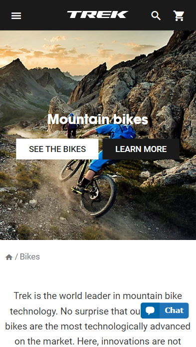
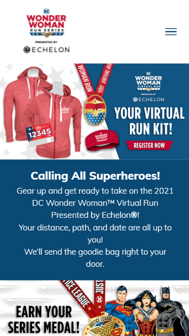

Visual Hierarchy
Trek Mountain Bikes
This Trek Mountain Bike website is a great example of Visual Hierarchy because the first thing you see is a large and majestic picture of the people having fun riding their bikes in the mountains. On top of the picture are two boxes, one white and one black. The white box catches your attention first and direct you to "Look at Bikes". The black box draws your attention next as it asks you if you want to "Learn More".
Contrast
DC Wonder Woman Run
The DC Wonder Woman Website is a great example of Contrast because of its use of contrasting colors like Red, White, and Blue. The bright red, dark blue, and bright white have the ability to draw attention to different areas of the website because of their contrast. One example is the red "Register Now" button that is sitting on the blue background. It calls your attention because of the contrast between the two colors.